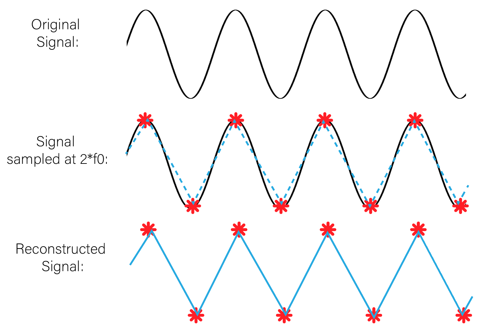

Els diferents microcontroladors tenen en comú els següents aspectes:
PWM significa modulació de l'ample de banda, en anglès Pulse Width Modulation i és una forma d'aconseguir una sortida analògica a partir de diverses sortides digitals, molt ràpides.
PWM es representa amb el símbol "~" tal com podem veure ala imatge següent d'un Arduino Uno

Més amunt podem veure que els pins números 3, 5, 6, 9, 10 i 11.
Aquests PWM són sortides analògiqes de 8 bits, en el cas de Arduino Uno Rev3, d'acord amb el fabricant, mentres en el cas d'Arduino Uno Rev 4 és de 12 bits, segons el fabricant que l'anomena DAC, que vol dir Digital Analog Converter
Tenir 8 o 12 bits en un convertidor digital analògic o DAC (Digital analog Converter) tipus PWM fa que tinguem 28 o 210 nivells diferents de corrent, es a dir 256 nivells diferents o 2048 nivells diferents
Suposem que tan Arduino Uno Rev3 o Rev4 poden donar 5 volts com a màxim. Quina seria la resolució en milivolts de cada Arduino?
5 volts dividit entre 256 dona 0.01953125 volts= 19,53125 milivolts per Arduino uno Rev3
5 volts dividit entre 2048 dona 0.00244140625 volts= 2,44140625 milivolts per Arduino uno Rev4
Els minivolts anteriors són la resolució que aconseguim. Imaginem que volem regular la intensitat d'un LED amb un Arduino Uno Rev3 aconseguim menys fluid i amb graons més grans, es a dir canvis mé bruscs perque 256 canvis son menys que 2048 volts. A continuació veurem una imatge que representa com conbinant moltes senyals digitals ràpidament sembla que generem un senyal analògic i aixó És la base del PWM.

Quan major és l'amplada del pols vol dir que major és el temps que la sortida digital està en voltatge alt, per exemple 5V i menys temps està a 0V, i per tant el promig de tots els polsos és més alt. En canvi si per exemple si cada pols és més estret a 5V vol dir que estarà més temps a 0V, i per tant el promig de tots els polsos és més baix. A la imatge de dalt es pot veure com s'encendria un LED o un motor funcionatria a una velocitat del 10%, 30%, 50%, 90%. Quin percentatge del senyal canviaria en un cas i en un altre?
A la taula a continuació veuras els valors per defecte de la freqüència PWM en Arduino Uno Rev3
| PIN de Sortida | FreqüènciaPWM (Hz) |
|---|---|
| PINS: 3, 9, 10, 11 | 490 Hz |
| PINS: 5 i 6 | 975 Hz |
Nota: La taula HTML anterior té una capçalera com un document HTML, però és diu thead, en comptes de head i es la primera filera de la taula. Té un cos anomentar tbody, en comptes de body i és la resta de la taula. La taula la defineix el tag table que agrupa thead i tbody. Totes les fileres tant del thead com el tbody es defineixen amb tg tr, que vol dir table row. Dintre de thead hi ha elements individuals que són cel·les que pertanyen a la primera filera i s'anomenen th o table heading. En el table body hi ha tmbé fileres tr però dintre d'aquestes fileres els elements individuals han de ser td, que significa table data. Per últim, s'han de tancar el table o el body. Tots aquests elements es poden modificar amb CSS i fer la taula amb un estil propi.
Les freqüències baixes produeixen soroll en els motors. Per tant, és preferible connectar mootors als pins 5 i 6.
La dreqüències ésla inversa del període, 976Hz o cicles per segon correspon a un període de 1/976 segons, que són 1,024 milisegons.
Apliquem el teorema de Nyquist que diu que hem de fer el doble de mostres com a mínim que la freqüencia màxima per aconseguir convertir una senyal digital que pot se processat pel microcontrolador mostrejat amb la figura següent:
Nyquist és important perque si en el codi poso una freqüència de moatreig de 20Hz per un so no funcionarà perque la freqüència mínima del so es 20 Hz i la màxima 20kHz perque es refereix al so audible en humans. Això es perque agafem mstres massa grans i no podem veure pujades i baixades de la senyal.
A continuació veurem una taula comparativa sobre els microcontroladors Arduino Uno i ESP32S3 i el circuit ADS1115